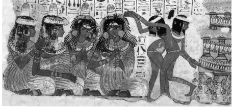

ŞEKİL 84. Eski Mısır’da bir davet sahnesinden ayrıntıda, başlarına parfümlü balmumundan yapılmış merhem külâhları takmış müzisyenler ve kadın dansçılar: Burada dört kadın bağdaş kurmuş otururlarken yarı çıplak iki genç kızın dansını seyretmekte, kadınlardan ikisi el çırparak tempo tutarlarken biri kamıştan yapılmış çifte flüt çalmaktadır [Thebes (Teb) kentinde Krallar Vadisi’ndeki Nebamun’un mezarından duvar resmi; 18. Hanedan dönemi, İÖ 1350 dolayı; British Museum, Londra].